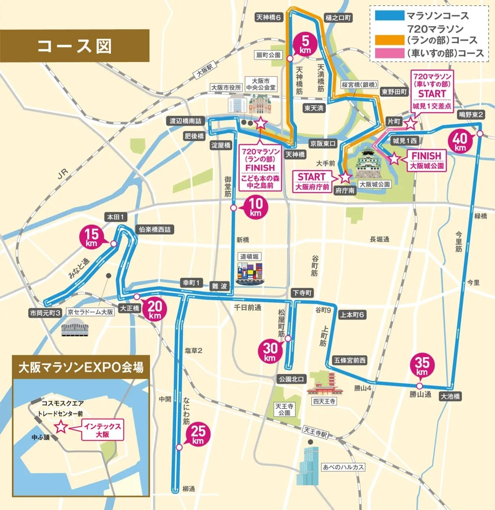
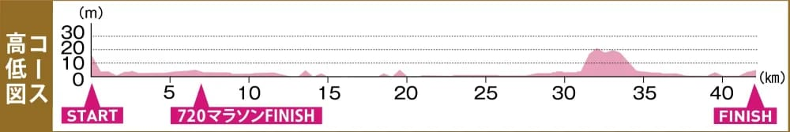

2027/2/28（日）09:15 起跑、關門 7 小時；號碼布 2/26–27 在 INTEX 大阪本人領，比賽當天不受理。
| 比賽 | |
|---|---|
| 日期 | 2027/2/28（日） |
| 起跑 | 09:15 第 1 波，第 2、3 波依序出發（區塊依申報成績） |
| 路線 | 大阪府廳前 → 大阪城公園內・42.195 km 官方コース紹介 ↗ |
| 關門 | 7 小時（16:15）・中途關門點等跑者手冊 |
| 領號碼布（EXPO） | |
| 地點 | INTEX 大阪 6 號館（Metro 中央線 コスモスクエア → New Tram 中ふ頭） |
| 時間 | 2/26（五）11:00–19:00・2/27（六）10:00–18:00 |
| 規定 | 本人＋護照，不可代領；比賽當天不受理 |
| 報名 | |
| 定員 | 全馬 31,970 人（總 34,000） |
| 海外費用 | US$145 ＋ 慈善 2 口 $10 ＋ 手續費 11% ≈ $172 |
| 抽籤 | 7/28–8/28 登記・9/28 公布結果 |
依官方「大会要項」（2026/10 查）。


圖片來自大會官網「コース紹介」；高低圖全程 0–30 m，只有 32–34 km 上町台地一段爬到約 20 m。
| km | 位置 | 怎麼跑 |
|---|---|---|
| 0 | 大阪府廳前 START → 北上天神橋筋 | 人多，不要為了超車頻繁變速；前幾公里慢幾秒不用追 |
| 5 | 扇町公園／天神橋 6 折返 | 折返後南下，經 東天滿・天神橋 |
| 7–8 | 中之島：大阪市中央公會堂 → 渡辺橋南詰 → 肥後橋 → 淀屋橋 | 720 馬拉松在こども本の森中之島前結束，人會突然少 |
| 10 | 御堂筋 南下（新橋附近） | 大阪最寬的大道，氣氛好容易超速，照配速 |
| 15 | 本田 1 → 伯楽橋西詰 → みなと通 西行 | 開始補給：膠、水、電解質照計畫 |
| 17 | 市岡元町 3 折返（京セラドーム附近） | 折返後往大正橋 |
| 20 | 大正橋 → 幸町 1 → 難波 | 半馬點在難波附近，看一下時間 |
| 22–27 | なにわ筋 南下（塩草 2・中開）→ 25 km → 柳通 折返 | 長直線，單調，用步頻撐住 |
| 29–30 | 回北 → 千日前通 東行 → 松屋町筋（30 km）→ 下寺町 | 30 km 後進入起伏段，準備收輸出 |
| 31–34 | 谷町 9 → 上本町 6 → 上町筋 南下 → 五條宮前西 → 四天王寺旁 → 勝山 4 | ⛰ 全程唯一的坡（上町台地，到約 20 m）：縮步幅、維持步頻，下坡不要追時間 |
| 35 | 勝山通 東行（35 km）→ 大池橋 | 坡過了，重新穩定配速 |
| 36–39 | 今里筋 北上：今里 → 緑橋 | 最後長直線，風通常從北邊來 |
| 40 | 鴫野東 2 折向西 → 城見 1 西 | 大阪城前還有地下道、轉折與短坡，路面轉平再衝 |
| 42.195 | 大阪城公園內 FINISH | 完賽證不郵寄，官網自行下載；紀念品忘了領 3/12 前可聯絡補寄 |
位置依官方コース図判讀，各公里標的精確位置、給水所與關門點以 2 月初寄出的參加案內（跑者手冊）為準。